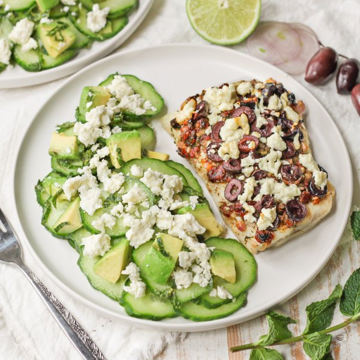

Broiled Greek Cod & Avocado Cucumber Salad with Feta-Mint Dressing

Total Time
35 min
Nutrition (per serving)
655.7 kcalCalories
38.2 gProtein
24.9 gCarbs
47.1 gFat
Full nutrition table
| Calories | 655.7 kcal |
| Total fat | 47.1 g |
| Saturated fat | 12.8 g |
| Trans fat | 0.6 g |
| Cholesterol | 130.2 mg |
| Sodium | 1354.8 mg |
| Carbohydrates | 24.9 g |
| Fiber | 10.2 g |
| Sugars | 8.1 g |
| Protein | 38.2 g |
| Potassium | 1248.3 mg |
| Calcium | 356.9 mg |
| Iron | 3.3 mg |
| Vitamin A | 568.6 IU |
| Vitamin C | 29.4 mg |
| Vitamin D | 43.1 IU |
Cookware
Ingredients
- 2avocados
- 1 ½ lbcod fillet
- 2 (4 oz) pkgscrumbled feta cheese
- 2English cucumbers
- 1 small pkgfresh mint
- ½ cupKalamata olives, pitted
- 2limes
- 2shallots
- 8sun-dried tomatoes, oil-packed
- black pepper
- crushed red pepper
- dill, dried
- extra virgin olive oil
- garlic powder
- oregano, dried
- salt
Steps
- Preheat oven to broil on high and position rack under the broiler. Coat a baking sheet pan with a thin layer of oil.2 tsp extra virgin olive oil
- Wash and dry the fresh produce.2 limes
1 small pkg fresh mint
2 avocados
2 English cucumbers - Juice one of the limes into a small bowl. (Reserve remaining lime for later.)
- Peel and mince shallots; add to the bowl with the lime juice.2 shallots
- Mince the sun-dried tomatoes; add to the bowl along with oil and spices. Stir to combine the tapenade.8 sun-dried tomatoes, oil-packed
2 tbsp extra virgin olive oil
2 tsp dill, dried
1 tsp oregano, dried
½ tsp garlic powder
¼ tsp crushed red pepper - Thinly slice olives.½ cup Kalamata olives, pitted
- Pat cod dry with paper towels and place on the baking sheet; season with salt and pepper. Spread with tapenade and top with olives.1 ½ lb cod fillet
½ tsp salt
½ tsp black pepper - Place baking sheet in the oven and broil until the cod is almost cooked through, about 8 minutes.
- Meanwhile, juice the remaining lime into a large bowl.
- Pick mint leaves off the stems; discard stems and mince the leaves. Add to the bowl with the lime juice along with oil, salt, and pepper. Stir to combine the dressing.4 tsp extra virgin olive oil
½ tsp salt
½ tsp black pepper - Halve and pit avocados; scoop out with a spoon and medium dice the flesh. Add to the bowl with the dressing.
- Remove cod from the oven and top with half the feta (reserve remaining cheese for the salad). Return baking sheet to the oven and broil until the fish flakes easily with a fork and the cheese is golden, 2-3 minutes more. Remove from oven.2 (4 oz) pkgs crumbled feta cheese
- Trim and thinly slice cucumbers crosswise; add to the salad bowl along with the reserved feta. Gently stir to combine the salad.
- To serve, divide cod and salad between plates; enjoy!